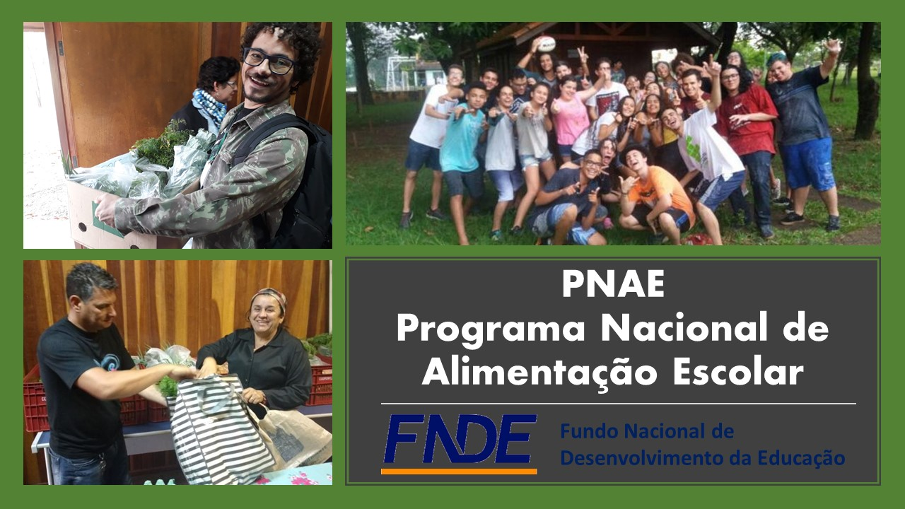
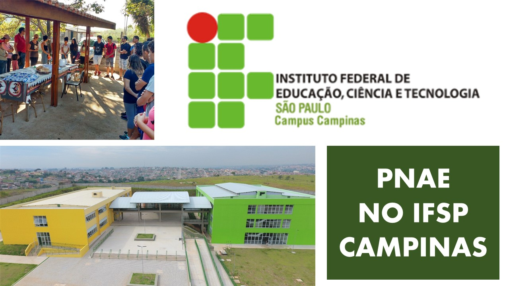
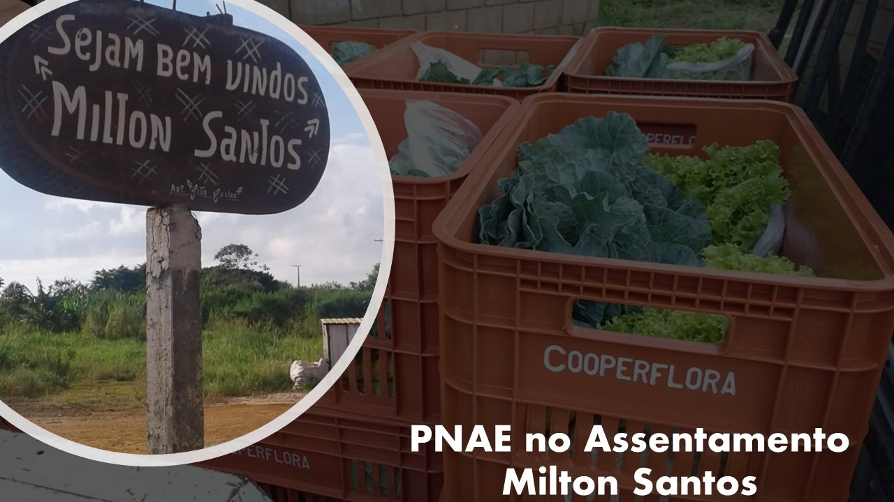

O Programa Nacional de Alimentação Escolar (PNAE), gerenciado pelo Fundo Nacional de Desenvolvimento da Educação (FNDE), autarquia federal vinculada ao Ministério da Educação, atende os alunos de toda a rede pública da educação básica (educação infantil, ensino fundamental, ensino médio e educação de jovens e adultos) matriculados em escolas públicas, filantrópicas e em entidades comunitárias (conveniadas com o poder público), contribuindo para o crescimento, o desenvolvimento, a aprendizagem, o rendimento escolar dos estudantes e a formação de hábitos alimentares saudáveis, por meio da oferta de refeições e de ações de educação alimentar e nutricional.
O Programa é regido pela Lei nº 11.947, de 16/6/2009 e Resoluções do FNDE. Tais legislações possibilitaram a expansão do atendimento de alimentação escolar a todos os alunos da educação básica brasileira (educação infantil, ensino fundamental, ensino médio e educação de jovens e adultos – EJA); o desenvolvimento de ações de educação alimentar e nutricional de forma transversal no projeto político pedagógico das escolas; e a participação de agricultores familiares como fornecedores de alimentos para as escolas por meio da obrigação de que toda prefeitura/secretaria estadual de educação invista 30% dos recursos
federais da alimentação escolar à compra de produtos diretamente da agricultura familiar,
medida que promove a inclusão de alimentos produzidos perto das escolas, estimulando
circuitos curtos de comercialização e o desenvolvimento local e sustentável das
comunidades.
Como acessar?
A escola beneficiária precisa estar cadastrada no Censo Escolar realizado pelo Instituto
Nacional de Estudos e Pesquisas Educacionais Anísio Teixeira (Inep/MEC). As escolas
filantrópicas, comunitárias e confessionais, sem fins lucrativos, que atendam aos critérios
estabelecidos na Resolução FNDE no 26/2013, são consideradas integrantes da rede
pública de ensino.
É importante observar que o cardápio escolar deve ser elaborado por nutricionista,
respeitando os hábitos alimentares locais e culturais, atendendo as necessidades
nutricionais específicas, conforme percentuais mínimos estabelecidos no artigo 14 da
Resolução no 26/2013.
Saber Mais...
http://mds.gov.br/compra-da-agricultura-familiar/pnae

O processo de fornecimento de merenda no Instituto Federal de São Paulo - Campus Campinas se iniciou concomitantemente com o recebimento de recursos para o PNAE, no segundo semestre de 2018, até então a alimentação escola não era garantida pelo instituto.
A partir do Terceiro trimestre de 2018, quando os recursos foram transferidos à unidade foi notado que de forma excepcional e justificada, que os recursos do PNAE não estavam atendendo o seu objetivo, que é o estímulo à agricultura local com a compra de produtos de cooperativas da Região Metropolitana de Campinas, devido à ausência de interessados da região no fornecimento de produtos alimentícios. Dessa forma, o Instituto passou a usar o orçamento próprio para adquirir alimentos [em geral] pouco processados de outros fornecedores.
Levando em consideração a falta de abrangência das chamadas públicas, no segundo semestre de 2018 assim como no primeiro semestre de 2019, buscou-se, com o apoio da Coordenadoria de Apoio ao Agronegócio do Estado de São Paulo (CODEAGRO), contactar e dialogar com representantes de cooperativas de agricultores locais para mapear e compreender a oferta de produtos da agricultura da região. Apesar dos esforços, apenas a chamada pública do segundo semestre de 2019 obteve êxito.
Os recursos recebidos para o segundo semestre de 2019 serão utilizados para aquisição de bananas prata COOPASUL, de Sumaré/SP, vencedora da chamada pública de 2019, na qual o contrato ainda se encontra em fase de assinatura.
Saber Mais...
https://www.cmp.ifsp.edu.br/index.php/noticias/1411-chamada-publica-aquisicao-de-generos-alimenticios-da-agricultura-familiar-pnae
PNAE Assentamento Milton Santos

Agricultores associados a Cooperativa Cooperflora juntamente com outros agricultores do Assentamento Milton Santos acessaram no ano de 2019 o edital de chamada pública n° 009/2019 da Prefeitura Municipal de Americana de aquisição de gêneros alimentícios da agricultura familiar para o atendimento ao Programa Nacional de Alimentação Escolar - PNAE.
Com habilitação para grupo informal os agricultores assinaram o projeto de venda e os contratos individualmente, porém representados por entidade articuladora na apresentação do projeto de venda. Grupos
No decorrer do Programa está previsto a entrega de 5.000 kg de alface, 4.000 kg de cheiro verde, 4.000 kg de chicória e 4.786 kg de mandioca para 60 unidades escolares do município
Saber Mais...
http://www.americana.sp.gov.br/upload/suprimentos/chamada_publica_9_2019_fcacd.pdf